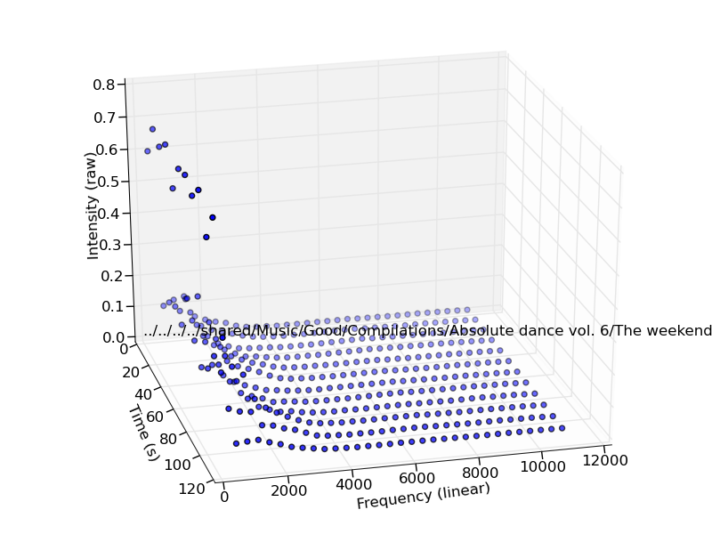
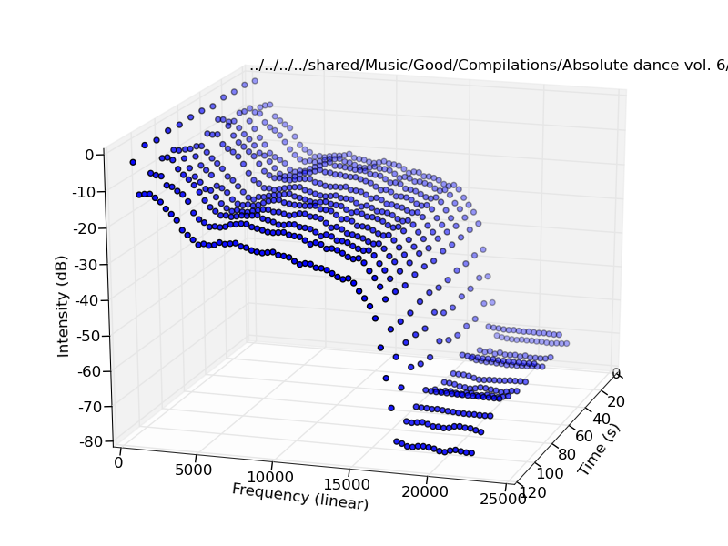

1.
Butterscotch signatures
1.
Butterscotch signatures
Up one level
A Butterscotch signature consists of at most 30 spectrum analyses, each performed on consecutive 4-second blocks of audio, starting from the onset of the first 5 dB RMS increase counted computed from 22-sample blocks (when using a 44.100 Hz sampling rate).
Each spectrum analysis reduces each 4-second audio block to 256 equal-width frequency bands (using a 512-point FFT), then cuts the high half of the bands, and finally averages the remaining 128 bands logarithmically, to result in 8 log bands from the first significant band to 11.025 KHz (the center of the highest frequency band is around 8.4 KHz). Each sample represents the relative signal amplitude, with the reference 0 dB amplitude being equivalent to the value 1.0. Samples in the spectrum analysis are not normalized to dB, but instead left raw. Chunks supplied to the FFT are windowed by a Hann window.
As it turns out, the average of the correlation coefficient between corresponding bands (across the time domain) among a set of songs is surprisingly effective. Identical (non-rolling-start) songs correlate almost perfectly regardless of start time differences, encoding bitrate or even incompleteness. In contrast, different versions of the same song and different songs correlate very weakly or negatively. Additionally, the fingerprint has a very useful quality control purpose too, as you will see graphically below.
This is a graphical representation output of a spectrum in time -- not a Butterscotch fingerprint, but you get the idea:

Butterscotch itself does not work with dB-adjusted values, but the suite can be used to perform spectrum analysis in decibels, in linear (equal-width) bands and up to full-spectrum (22 KHz), for spectrum plots:

Additionally, the suite can quantize these decibel-based points to a character, and display a character-based table onscreen, in a sort of very coarse, horizontal spectrogram.
Properties of the algorithm ¶
The algorithm's requirements specify that the algorithm:
- Be robust against different "onsets of audible signal". If two different files contain the same song, and one of them has some extra silence at the start, that's not a problem.
- Be robust against identifying songs with rolling starts. A song in a megamix is not conflated with the same song's album / single release.
- Be robust against lossy compression. The 16~18 KHz lowpass algorithm in MP3 does not affect Butterscotch. A song encoded twice with different quality settings is reliably identified as the same song.
- Be robust against incomplete songs. Two copies of the same song (one complete, one incomplete) still correlate highly, and you can use your music player to weed out the shorter one.
- Be fast. A 20.000 song collection needs to be fingerprinted efficiently, and posterior analysis of the collection needs to be nearly instantaneous. Oops... we're working on that.
To accomplish these, the algorithm:
- vectorizes all operations as much as possible,
- discards frequencies above 11 KHz,
- seeks to onset of audio by identifying the first RMS rise in a very short time frame,
- does not perform FFTs until end of audio, but just for two minutes.
The drawback of the algorithm is that it requires an explosive (quadratic time) amount of correlations. Finding tracks similar to one song is an O(N) operation. However, correlations can be computed incredibly quickly (less than a millisecond for a pair of signatures) and cached for future on demand use, so for collections below 50000 tracks it's not a problem.
How we generate the signatures ¶
- Seek to the onset of audio as described above
- Generate 30 real FFTs (rfft) for each 4-second-long block
- Discard the DC component of the rfft
- Discard the highs half of the remainder (the library does not do this by default, but the command line tools do)
- Log-average the remaining bands
- Return a two-dimensional array
This makes it easy to perform frequency- and time-based correlations on the signatures.
And what about the name? ¶
It's just a Googleable name. Get over it.